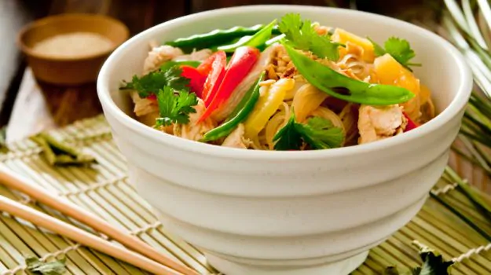
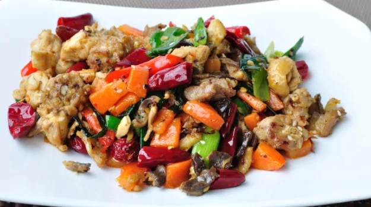

How To Make Delicious Chineese dishes
Dim Sums
INSTRUCTIONS:
Dim Sum is the Chinese style of serving an array of small plates of savory and sweet foods, that together, make up a delicious meal. These feasts are traditionally enjoyed by groups of family and friends over long brunches, accompanied by piping hot cups of tea.
 The most popular dim sum dishes include steamed, boiled, and fried dumplings, bite-sized meats, steamed buns, spring rolls, rice and noodle dishes, and creamy desserts. These are served in no particular order, and the fun is in sharing the different dishes, and enjoying the variety of tastes.
Whether you want to create your own Instagram-worthy dim sum party or are looking for tasty appetizer recipes, enjoy these delicious dim sum recipes you can make at home.
The most popular dim sum dishes include steamed, boiled, and fried dumplings, bite-sized meats, steamed buns, spring rolls, rice and noodle dishes, and creamy desserts. These are served in no particular order, and the fun is in sharing the different dishes, and enjoying the variety of tastes.
Whether you want to create your own Instagram-worthy dim sum party or are looking for tasty appetizer recipes, enjoy these delicious dim sum recipes you can make at home.
Hot and Sour Soup
INSTRUCTIONS:
Make your cornstarch slurry. Whisk together 1/4 cup of the stock and cornstarch until combined. Set aside.
Bring the soup to a simmer. Add the remaining stock, mushrooms, bamboo shoots (if using), rice wine vinegar, soy sauce, ginger and chili garlic sauce to a large stock pot, and cook until the soup reaches a simmer. Stir in the cornstarch slurry and continue cooking for a minute or so, until the soup has thickened.

Drizzle in those beautiful egg ribbons! While stirring the soup in a circular motion with one hand, use your other hand to slowly drizzle the whisked eggs into the soup.
Season the soup. Stir in the tofu, half of the green onions, and sesame oil. Then season the soup with salt and black pepper (or white pepper) to taste.
Serve. Ladle up your servings while the soup is nice and hot, garnished with extra green onions.
Quick Noodles
INSTRUCTIONS:
Add the oyster sauce, brown sugar, soy sauce and sesame oil to a bowl and stir until combined.
Bring a large pot of water to a boil and cook the noodles according to the package directions (boil for 7-10 minutes). Drain the cooked noodles in a colander, then set aside.
 While the pasta cooks, mince the garlic and slice the green onions. Melt the butter in a large skillet over medium-low heat. Once the butter is melted and bubbly, add the garlic and onions (save a few for garnish) and sauté until they are soft and fragrant (1-2 minutes).
Remove the skillet from the heat. Add the drained pasta and oyster sauce mixture to the skillet, and stir well to coat the pasta. If your pasta is stiff or sticky making it hard to stir, sprinkle a small amount of hot water over the pasta to loosen it up. Garnish the pasta with any reserved sliced green onions, then serve.
While the pasta cooks, mince the garlic and slice the green onions. Melt the butter in a large skillet over medium-low heat. Once the butter is melted and bubbly, add the garlic and onions (save a few for garnish) and sauté until they are soft and fragrant (1-2 minutes).
Remove the skillet from the heat. Add the drained pasta and oyster sauce mixture to the skillet, and stir well to coat the pasta. If your pasta is stiff or sticky making it hard to stir, sprinkle a small amount of hot water over the pasta to loosen it up. Garnish the pasta with any reserved sliced green onions, then serve.
Szechwan Chilli Chicken
INSTRUCTIONS:
1.Flash fry the chicken with ginger till there colour changes to golden.
2.Now, drain the oil and keep this aside.
3.Now, add garlic, spring onions green pepper corns and the brown peppercorn.

4.Stir for 5 minutes and then add the dry chillies, white pepper powder, ajino moto, salt and chilli oil.
5.Stir again for 5-10 minutes and add the black vinegar.
6.Stir fry for 10 minutes and garnish with green peppercorns.
7.Szechwan chilli chicken is ready to be served.